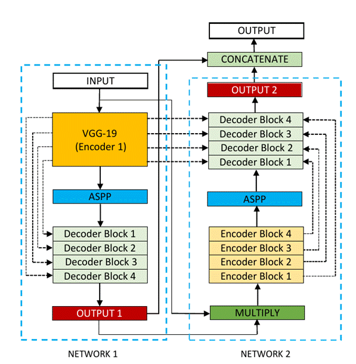

Medical Image
Segmentation
COMP SCI 766 Final
Report
-Madhav Kanbur
-Vikram Shetty
1. Outline
Image segmentation is the process of
assigning a label to every pixel in an image such that pixels with the same
label share certain characteristics. The goal of segmentation is to simplify
and/or change the representation of an image into something that is more
meaningful and easier to analyze.[1][2] Medical image segmentation is the task
of segmenting objects of interest in a medical image such as tumors, polyps,
and other abnormalities.
The manual pixel-wise annotation of medical image data
is very time-consuming, requires collaborations with experienced medical
experts, and is costly. During the annotation of the regions in medical images
(for example, polyps in still frames), the guidelines and protocols are set
based on which expert performs the annotations. However, there might exist
discrepancies among the experts, e.g., while considering a particular area in
the lesion as cancerous or non-cancerous. Additionally, the lack of standard
annotation protocols for various imaging modalities and low image quality can
influence annotation quality. Other factors such as the annotator's
attentiveness, type of display device, image-annotation software
and data misinterpretation due to lightning conditions can also affect the
quality of annotations [9].
An alternative solution to manual image segmentation
is an automated computer aided segmentation based
diagnosis-assisting system that can provide a faster, more accurate, and more
reliable solution to transform clinical procedures and improve patient care.
Computer aided diagnosis will reduce the expert's burden and
also reduce the overall treatment cost.
2. Motivation
One of the key benefits of medical image segmentation is that
it allows for a more precise analysis of anatomical data by isolating only
necessary areas. Semantic segmentation results can help identify regions of
interest for lesion assessment, such as polyps in the colon, to inspect if they
are cancerous and remove them if necessary. Thus, the segmentation results can
help detect missed lesions, prevent diseases, and improve therapy planning and
treatment.
We did learn about very simplistic pixel segmentation methods
in the course. We've also had a few abstract discussions about this problem
statement in class. A few discussions and readings of research papers led to us
selecting this as a topic for our course project.
3. Background
Given an input image I, each pixel p(x, y) ∈ I must be assigned a label l from a set of labels L based on some
criteria. Figure 1 shows an example of Binary segmentation on a colonoscopy
image where the label set L = {0, 1}. The label 1 represents pixels containing
polyp growth and 0 indicates the absence of polyps in that pixel.
Fig 1 - Medical image with polyps (left) and its segmented mask (right)[3]
There
are several techniques for segmenting images such as - Threshold Based Segmentation, Edge Based
Segmentation, Region-Based Segmentation, Clustering Based Segmentation and
Artificial Neural Network Based Segmentation. In this project, we will keep our
focus on two State-of-the-art CNN (Convolutional Neural Network) techniques to
segment medical images : DoubleU-Net and MSRF-Net.
4. Methods
4.1 The Double U-Net
4.1.1 Background
Encoder-Decoder based approaches like U-Net [3] and its
variants are a popular strategy for solving medical image segmentation tasks.
The U-Net architecture consists of two parts, namely, the analysis and
synthesis path. In the analysis path, deep feature maps are learned, and in the
synthesis path, segmentation is performed based on the learned features.
Additionally, U-Net uses skip-connection operations. The skip connection allows
propagating dense feature maps from the analysis path to the corresponding
layers in the synthesis part. In this way, the spatial information is applied
to the deeper layer, which significantly produces a more accurate output
segmentation map.
4.1.2 Double U-Net
Architecture
DoubleU-Net (Debesh
Jha et al., 2020) [4] is a novel architecture that takes inspiration from
U-Net. It uses two U-Net architectures in sequence, with two encoders and two
decoders. The first encoder used in the network is a pre-trained VGG-19 [5], which is trained on
ImageNet [6]. Additionally, it uses Atrous Spatial
Pyramid Pooling (ASPP) [7] which is a semantic segmentation module for
resampling a given feature layer at multiple rates prior to convolution. This
amounts to probing the original image with multiple filters that have
complementary effective fields of view, thus capturing objects as well as
useful image context at multiple scales. Rather than resampling features, the
mapping is implemented using multiple parallel atrous
convolutional layers with different sampling rates.
Fig 2 - Atrous
Spatial Pyramid Pooling (ASPP)
Figure 3 shows an overview of the DoubleU-Net
architecture. As seen from the figure, DoubleU-Net starts with a VGG-19 as an encoder sub-network,
which is followed by a decoder sub-network. What distinguishes DoubleU-Net from U-Net in the first network (NETWORK 1) is
the use of VGG-19 marked in yellow, ASPP marked in blue, and decoder block
marked in light green. The squeeze-and-excite block [8] used in the encoder of
NETWORK 1 and decoder blocks of NETWORK 1 and NETWORK 2 is responsible for
reducing redundant information and passing the most relevant information to
subsequent stages. An element-wise multiplication is then performed between the
output of NETWORK 1 with the input of the same network. This product is then
used as the input for NETWORK 2 which produces our final predicted mask
(Output2). The difference between DoubleU-Net and
U-Net in the second network (NETWORK 2) is only the use of ASPP and
squeeze-and-excite block. All other components remain the same.

Fig 3 - Block diagram of the DoubleU-Net
architecture
The
idea behind having two U-Net architectures in series is that the output mask
produced by NETWORK 1 (Output1) can be further improved by multiplying it with
the input and passing it through NETWORK 2 to obtain our final predicted mask
(Output2).
4.2 MSRF-Net
4.2.1 Why Multi Scale Fusion?
Multi
Scale Fusion employs a mixture-of-feature maps paradigm, wherein feature maps
of multiple scales are fused together/exchanged. The authors posit that this
allows the preservation of resolution, improved information flow and
propagation of both high- and low-level features to obtain spatially accurate
segmentation maps.
The
multi-scale information exchange in the network proposed by [9] preserves both
high- and low-resolution feature representations, thereby producing finer, richer and spatially accurate segmentation maps. The
repeated multi-scale fusion helps in enhancing the high-resolution feature
representations with the information propagated by low-resolution representations.
4.2.2 MSRF-Net
Architecture
MSRF-Net [9] is a novel architecture
specifically designed for segmenting medical objects of variable size trained
on small biased datasets (commonly seen in cases of
medical datasets). MSRF-Net maintains high-resolution representation throughout
its pipeline, which is conducive to potentially achieving high spatial
accuracy. It utilizes a novel Dual-Scale Dense Fusion (DSDF) block that
performs dual scale feature exchange and a sub-network that exchanges
multi-scale features using the DSDF block.
Fig 4 - DSDF Block
The DSDF block takes two different scale inputs and employs a
residual dense block that exchanges information across different scales after
each convolutional layer in their corresponding dense blocks. The densely
connected nature of DSDF blocks allows relevant high and low-level features to
be preserved for the final segmentation map prediction.
Fig 5 - Multi-Scale Residual Fusion
(MSRF) Subnetwork
The multi-scale information exchange (dotted red box in Fig
5) preserves both - high and low resolution feature
representations, thereby producing finer, richer and spatially accurate
segmentation maps. The repeated multi-scale fusion helps in enhancing the
high-resolution feature representations with the information propagated by
low-resolution representations. Further, layers of residual networks allow
redundant DSDF blocks to die out, and only the most relevant extracted features
contribute to the predicted segmentation maps.
MSRF-Net also uses a complimentary gated shape stream that
can leverage the combination of high and low-level features to compute shape
boundaries accurately.
Figure 6 represents
the MSRF-Net that consists of an encoder block, the MSRF sub-network, a shape
stream block, and a decoder block. The encoder block consists of squeeze and
excitation modules, and the MSRF sub-network is used to process low-level
feature maps extracted at each resolution scale of the encoder. The MSRF
sub-network incorporates several DSDF blocks. A gated shape stream is applied
after the MSRF sub-network, and decoders consisting of triple attention blocks
are used in the proposed architecture. A triple attention block has the
advantage of using spatial and channel-wise attention along with spatially
gated attention, where irrelevant features from the MSRF sub-network are
pruned.
Fig 6 - MSRF-Net Architecture
5. Implementation Details
We
implemented both models in PyTorch v1.11.0.
Hardware - NVIDIA Tesla V100-SXM2-32G (Euler
Cluster)
Dataset - CVC-ClinicDB
[10]
Data Augmentations - Center Crop, Crop, Random Rotate
90, Grid Distortion
DoubleU-Net:
-
Batch
Size = 16
-
Epochs
= 120
-
Optimizer
= Nadam
-
Learning
Rate = 1e-4
-
Loss
Function = Dice Loss
Fig 7 - Decline in Loss during DoubleU-Net training
MSRF-Net:
-
Batch
Size = 8
-
Epochs
= 120
-
Optimizer
= Adam
-
Learning
Rate = 1e-4
-
Loss
Function = LCE1 + LCE2 + LCE3 + LBCE
(Canny)
where
LCEi = Dice Loss + Cross Entropy Loss b/w
Prediction Mask i and Ground Truth
LBCE_Canny = Binary
Cross Entropy Loss b/w ShapeStream's Prediction and
Canny Edge Mask of input

Fig 8 - Decline in Loss during
MSRF-Net training
6. Results
|
|
DoubleU-Net |
MSRF-Net |
|
Dice Loss |
0.0955868139 |
0.09497487545 |
|
mIoU |
0.835641801357 |
0.82959288358 |
|
Precision |
0.94105728 |
0.884826603055 |
|
Recall |
0.89136698 |
0.929816107109 |
Table 1 - Metrics for the CVC-ClinicDB Dataset
Following
are some of the results we observed with both our architectures. Please note
that starting from the top left and moving clockwise, we have the input, ground
truth mask, mask prediction by MSRF Net & finally mask prediction by Double
U-Net for Figures 9-14.
Fig 9 Results
Fig 10 Results
Fig 11 Results
Fig 12 Results
Fig 13 Results
Fig 14 Results
In
all of these results, we can see that while we have really good predictions for
Double U-Net as well, the predictions made by MSRF-Net seem less
noisier and more accurate towards the boundaries.
We
suspect this is the case because the MSRF-Net explicitly takes a Canny Edge Map
as input in conjunction with the medical image and predicts an edge map for the
mask via its Shape Stream Module. It then optimizes this prediction using the
ground truth edge map, which results in crisper & smoother mask boundaries,
finally predicted by the decoders.
7. Challenges Faced
-
Very
long training time for both models (~15 hours), even on Euler Clusters.
-
Couldn't
test performance on other datasets because of time constraints.
-
Discrepancies
between model as described in the paper vs author's implementation on GitHub.
-
Losses
started stagnating for both models well before the final epoch. We kept saving
models after every 5 epochs, and tested on the
validation set starting from the model with the lowest loss & made sure the
validation loss wasn't too low either and that we didn't overfit.
8. Future Work
-
Compare
metrics on other medical datasets like MICCAI 2015 (Colonoscopy), Kvasir SEG (Colonoscopy) etc.
-
Search
for a better loss function. Some alternatives would be the Focal Loss or
Unified Focal Loss or a combination of such loss functions along with the Dice
Loss for class imbalanced situations, which are commonly seen in the medical
imaging community.
9. References
1. Linda G. Shapiro and George C. Stockman (2001): "Computer Vision", pp 279-325, New
Jersey, Prentice-Hall, ISBN 0-13-030796-3
2. Barghout, Lauren, and Lawrence
W. Lee. "Perceptual information processing system." Paravue Inc.
U.S. Patent Application 10/618,543, filed July 11, 2003.
3. O. Ronneberger,
P. Fischer, and T. Brox, "U-net: Convolutional
networks for biomedical image segmentation," in Proceedings of International
Conference on Medical image computing and computer-assisted intervention
(MICCAI), 2015, pp. 234-241.
4. Jha, Debesh, et al.
"DoubleU-Net: A Deep Convolutional Neural Network for
Medical Image Segmentation." 2020 IEEE 33rd International Symposium on
Computer-Based Medical Systems (CBMS), IEEE, 2020, pp. 558-64.
5. K. Simonyan
and A. Zisserman, "Very deep convolutional networks for large-scale image
recognition," arXiv preprint arXiv:1409.1556, 2014.
6. J. Deng, W. Dong, R. Socher,
L.-J. Li, K. Li, and L. Fei-Fei, "Imagenet: A
large-scale hierarchical image database," in IEEE conference on computer vision
and pattern recognition (CVPR), 2009, pp. 248-255.
7. L.-C. Chen, G. Papandreou, F. Schroff, and H. Adam, "Rethinking atrous
convolution for semantic image segmentation," arXiv
preprint arXiv:1706.05587, 2017.
8. J. Hu, L. Shen, and G. Sun,
"Squeeze-and-excitation networks," in Proceedings of computer vision and
pattern recognition (CVPR), 2018, pp. 7132-7141.
9. Srivastava, Abhishek, et al. "MSRF-Net:
A Multi-Scale Residual Fusion Network for Biomedical Image Segmentation." IEEE
Journal of Biomedical and Health Informatics, 2021, pp. 1-1.
10. CVC-ClinicDB
- https://www.kaggle.com/datasets/balraj98/cvcclinicdb